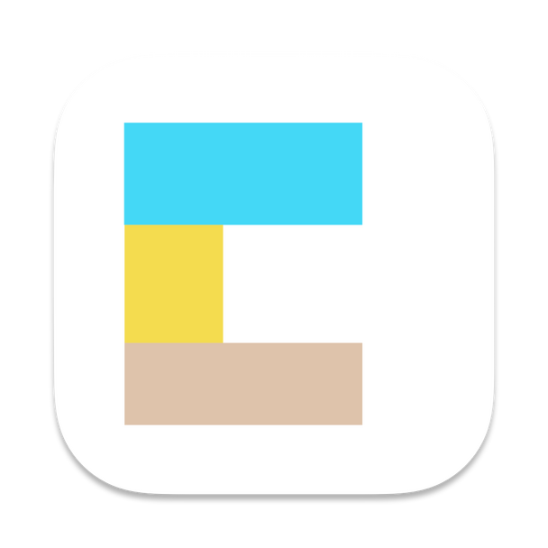
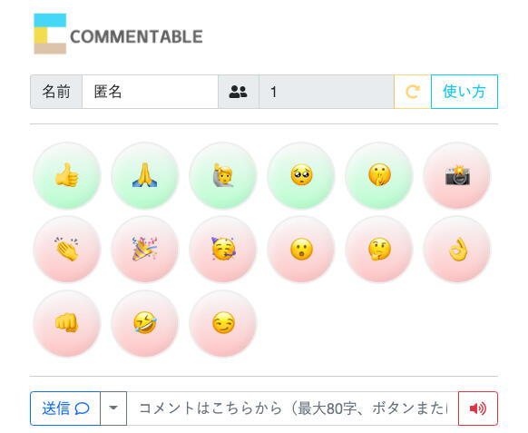
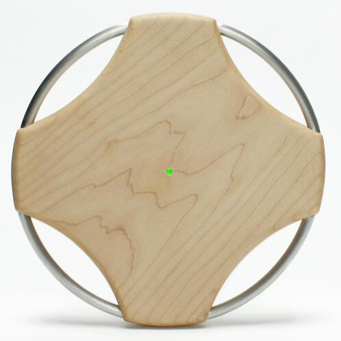

音を鳴らせるコメント共有アプリケーション

Commentable
Commentable（コメンタブル）は，授業の参加者が音やリアクションを使ってコメント参加を楽しめるコメント共有アプリケーションです．遠隔授業でも対面授業でも使えます．授業以外にも学会，表彰式，発表会などでもご活用いただけます．
先生方へ（配信者）
配信者用のデスクトップアプリ commentable-desktop をインストールして起動し，部屋名を入力して入室しましょう．画面に表示された QR コードを学生に見せるだけで，すぐに Commentable を始められます．コメントは画面全体に重ねて表示されるので，スライドや資料を表示したまま使えます．（オンラインで画面を共有するときは，デスクトップ音声の共有も忘れずに）各種設定は画面上部のメニューバーにある Commentable のアイコンから行います．参加者が PC から接続する場合は，メニューの「投稿ページURLをコピー」をクリックして，配信ソフトのチャット欄などから URL を共有してください．複数の画面を使っている場合は，「表示ディスプレイ選択」からコメントを表示する画面を選べます．最新版（v1.7 系）は macOS（Apple Silicon）向けに配布しています．Windows 版と Intel Mac 版は v1.6.3 をご利用ください（v1.7 の新機能は使えません）．

学生のみなさんへ（視聴者）
先生から提示された QR コードをスマートフォンで読み取ってみましょう．左のような画面になったら，ボタンを試しに押してみましょう．緑のボタンは音なしのリアクション，赤いボタンを押すと先生の画面で音が鳴ります．詳しくは画面上部の使い方ボタンを押してみましょう．送信ボタン横のオプションから，文字や縁取りの色，文字の大きさ，コメントの流れる向きを変えられます．音声読み上げをオンにすると，あなたのコメントを先生の PC が読み上げてくれます．先生がアンケートを始めると，回答画面が自動で表示されます．名前欄には自分の名前を入れておきましょう．出席やアンケートの回答の記録に使われます．PC から利用したい場合は，先生に「URL をください」と伝えてください．先生から送られてきた URL を好きなブラウザで開いてください．
use case -- にぎやかで対話のある授業
授業で

Commentableはもともと授業やワークショップ等と併用することを念頭に開発されました．授業の進捗に合わせて「OK👌」リアクションをしたり，先生の進め方が早いと思ったときは「ちょっとまって🤔」リアクションで，インタラクティブに先生とコミュニケーションを図りましょう．
use case -- あなたの気持ちを伝えよう
発表会で

発表中は「静かに🤫」，素晴らしい発表にはたくさんの「拍手👏」を贈りましょう．発表終了後は「記念撮影📸」も忘れずに．フラッシュによる画面の点滅にはご注意ください．上の画像はある国際会議の表彰式で利用したときの様子です．
use case -- 恥ずかしいな，そんなとき
イベントで

質問したいことがあるけれど，マイクを使って声を出すのは恥ずかしい．一言目でたんが絡んだらどうしよう．そんなときは音声読み上げボタンをオンにしてコメントを送信しよう．あなたの代わりに自動音声読み上げがしてくれるよ．
v1.7 の新機能
アンケート
メニューの「アンケート...」から質問と選択肢（単一選択・複数選択）を作って開始すると，参加者の画面に回答画面が表示されます．回答は1人1回で，集計結果はリアルタイムで確認できます．途中から参加した人にも表示されます．
授業ログ
コメント，リアクション，入退室，名前の変更，アンケートの回答などを，授業回ごとに記録します．ダッシュボードの「授業開始」「授業終了」で授業回を区切れます（区切らない場合は，3時間操作がないと次の授業回になります）．サーバーの授業ログは21日で自動的に削除されますが，配信中に受け取ったログはデスクトップアプリが自動で「書類/Commentable/logs」に保存します．メニューの「授業ログのフォルダを開く」から確認できます．
授業参画度
メニューの「授業参画度」から，授業ログをもとに学生ごとの参画度を算出できます．滞在時間・発言・発言の質・アンケートの回答率・継続性の5つの観点を，重みを調整しながら集計し，CSV で書き出せます．ログファイルはブラウザの中だけで処理され，サーバーには送信されません．
配信者の鍵（なりすまし防止）
部屋ごとに配信者の鍵を作り，最初に入室したアプリだけがその部屋の配信画面になれるようにしました．同じ部屋名で別の人が配信画面として入室することはできません．30日間使われなかった部屋名は，また誰でも使えるようになります．自分の別の Mac / PC から同じ部屋で配信したいときは，メニューの「配信者の鍵」→「保存場所を変更...」で，Dropbox や iCloud Drive などの同じフォルダを選んでください．
カメラと人物切り抜き
メニューの「カメラ」から，配信者のカメラ映像を画面の隅や中央に重ねて表示できます．macOS では人物切り抜きを使って，背景を消して自分だけを表示することもできます．映像にマウスを重ねると一時的に消えます．
その他
-
クリップボードの内容を参加者の配布資料欄に送信（⌘ + Option + V）
-
コメントの文字サイズ（小・中・大）と流れる向き（上下左右）の指定
-
コメントコマンド =text("文字", x, y) で好きな位置に文字を表示
-
時刻表示，サウンドコメントのミュート，投稿制限の解除
ダッシュボードと AI アシスタント
メニューの「ダッシュボード」から，配信者専用の管理画面をブラウザで開けます（Chrome を推奨します）．ダッシュボードの URL には部屋の鍵から作ったトークンが含まれているので，他の人には共有しないでください．ダッシュボードでは，画面中央へのメッセージ表示（「15:00から再開します」など），コメントログの閲覧と書き出し（学生ごとの集計 CSV を含む），アンケート結果，参加者数の推移を確認できます．効果音パネルからは，チャイムやドラムロールなどの効果音を鳴らせます．音声認識と組み合わせると，「正解」「すごい」などの言葉に合わせて自動で効果音を鳴らしたり，決まった時刻に自動でチャイムを鳴らしたりすることもできます．ダッシュボードには AI アシスタント「米太郎」（名前は変更できます）が入っています．音声認識を併用すると，配信者のこれまでの話を聞いた上で，参加者からの質問に答えたり，定期的に雑談やリアクションをしたりします．例えば「米太郎，さっき先生が話していたデザイナーの名前って誰だっけ？」といった問いかけにも答えられます．AI アシスタントを使うには，LM Studio でローカルサーバーを起動し，設定で CORS を有効にしてください．ダッシュボードの「AI設定」で LM Studio のアドレス（既定は http://127.0.0.1:1234/v1）を指定します．gpt-oss-20b でも十分実用的な支援を受けられます．

もっとCommentable
Commentable は MIT License で配布されているので，あなたが好きなように改造して，それを別のサービスとして運用しても構いません．その際は Commentable へのクレジット（本家サイトへのリンクや「このプロジェクトは Commentable から派生したものです」などの簡単なもので問題ありません）を明示してくださいね．もしあなたが Commentable を利用して面白いサービスを開発したら是非開発者に教えてください．あなたが開発してくれたより優れたオンライン体験をみんなで共有していきたいのです．
Commentable by chihiros さん

Image by Chihiro Suzurikawa
横に流れるコメントや，下方から登るリアクションで共有スライドの邪魔をしない方式に変更されています．リアクションボタンも少しオリジナルとは異なるものが用意されています．本家とは別のサーバにデプロイされているだけでなく，コードリファクタリングが行われているので，ひょっとして本家よりも安定して動くかも？作者による以下の開発記事もおすすめです．
音って必要なの？
コメント共有をするだけであれば，CommentScreen[1]やパパパコメント[2]を利用するのも良いでしょう．授業中に音を鳴らすなんて，最初は気がひけるかもしれません．実は開発者自身がそう思っていました．東京都立大学で開講しているプロトタイピング基礎という授業の中で，コメント共有アプリケーションのプロトタイピングを行った際，音を鳴らせるようにしたらどうだろうと考えて，試しに実装したのが開発のきっかけです．すると不思議と学生達との対話が増え，いまではCommentableなしでオンライン授業をやるのは難しいと思うほどです．右の図はある授業（50人規模）で，学生がオンライン上で発表会をしたときの投稿数の時間推移です．sound（音あり）とno sound（音無し）では，sound投稿が常に一定の増加を示しています．授業中に学生が継続的にリアクションしている様子が伺えます．授業形式によっては音あり投稿のほうが少ない場合もありますので，授業形態に合わせて利用するとよいでしょう．
FAQ
配信者
Q: 不適切な単語や用語が画面に表示されてしまいませんか？A: コメントや名前に明らかに不適切な用語が含まれている場合は，送信する前に参加者に知らせ，修正するまで送信できないようにしています．ただしすべての表現を防げるわけではありません．コメントは名前とともに授業ログに記録されますので，利用の前に参加者へ利用のルールを伝えてください．Q: 途中から参加した学生がそれ以前のコメントを見ることはできますか？A: はい，できます．特別な操作は不要です．Q: 音がうるさくて授業になりませんA: メニューにある「サウンドコメントのミュート」をお試しください．全てのサウンドコメントの音が鳴らなくなります．Q: 「部屋に入室できません」と表示されましたA: その部屋名は別の配信者のアプリが使用しています．別の部屋名で入室してください．自分の別の Mac / PC で使っていた部屋の場合は，メニューの「配信者の鍵」で，そちらと同じ保存場所（Dropbox など）を選んでから入り直してください．Q: 授業ログはどこに保存されますか？A: サーバーには21日間保存され，その後自動で削除されます．配信中に受け取ったログは，デスクトップアプリが「書類/Commentable/logs」に保存しています．ダッシュボードの「コメントログ」からも書き出せます．
視聴者
Q: 誤って記入途中のコメントを送ってしまいました．削除できますか？A: 投稿されたコメントは即時に配信者画面に表示され，相手に送信されたログは削除することができません．Q: コメントを表示させる位置は変更できますか？A: コメントコマンド機能を使うことで任意の位置にテキストを表示できます（詳細は投稿ページ内の使い方を参照してください）．また，送信ボタン横にあるオプションからコメントの色や文字の大きさ，表示方式（右から左へ流すなど）を変更できますのでお試しください．Q: 名前は入力しないといけませんか？A: 名前がなくても投稿できますが，先生は名前を使って出席やアンケートの回答を確認します．授業で使うときは自分の名前を入力しておきましょう．Q: アンケートの回答をやり直せますか？A: 回答は1人1回です．送信した回答は変更できません．
無料ですか？
はい，無料です．ただし開発者の無理の無い範囲でサービスを提供していますので，数百人を超える大規模イベントに導入する場合はトラフィック超過により利用できなくなる恐れがあります．同じ時間帯に他の人が使っている場合もありますので，少人数で使っているのにレスポンスが悪いということも十分に起こりえますのでご注意ください．大規模イベント（あまり向かないかもしれませんが）での利用を検討したい場合は，ご自身でサーバにデプロイしていただくか，開発者の馬場にご相談ください．
免責
本サービスを利用するにあたり生じた事故，損害に対して開発者は一切の責任は負いませんので，どうぞ自己責任でご利用ください．GitHub 上に Commentable をおいていますので，必要に応じてご自身でサーバにデプロイしてください．
フィードバックをください
Commentableに関して不満や改善希望，その他ご意見，励まし等がありましたら以下のフォームからアンケートにご回答いただけると嬉しいです．不具合の報告は GitHub の Issues でも受け付けています．
支援したいです
もしあなたがこのサービスを気に入って，支援をしたい場合は以下の2通りのやり方をご検討ください．いずれも開発者にとって大きな励みとなります．
-
GitHub 上で開発に参画する
-
東京都立大学特定研究寄付金を通じて金銭面でサポートする
誰が作ってるの？
馬場哲晃 baba@tmu.ac.jp
大学で教員をしています．専門はインタラクションデザイン，プロトタイピングデザイン，メディアアートです．
